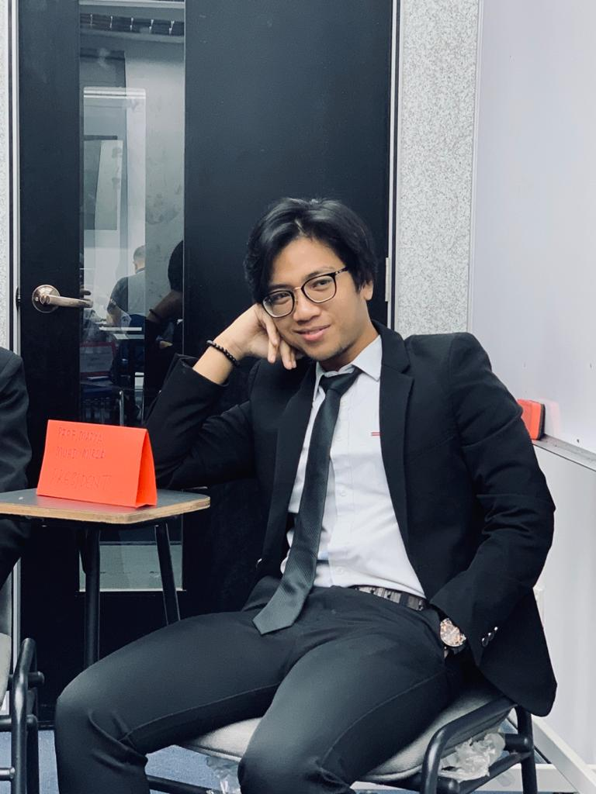
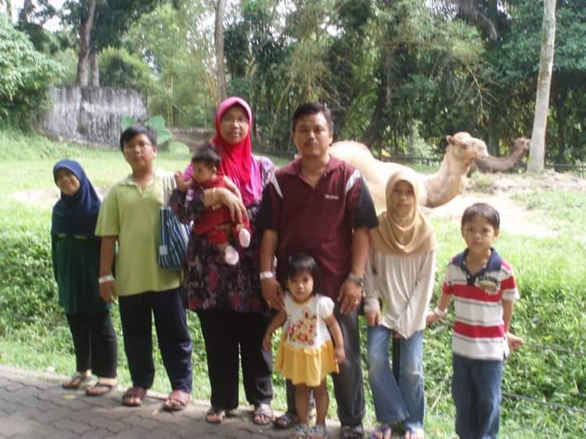
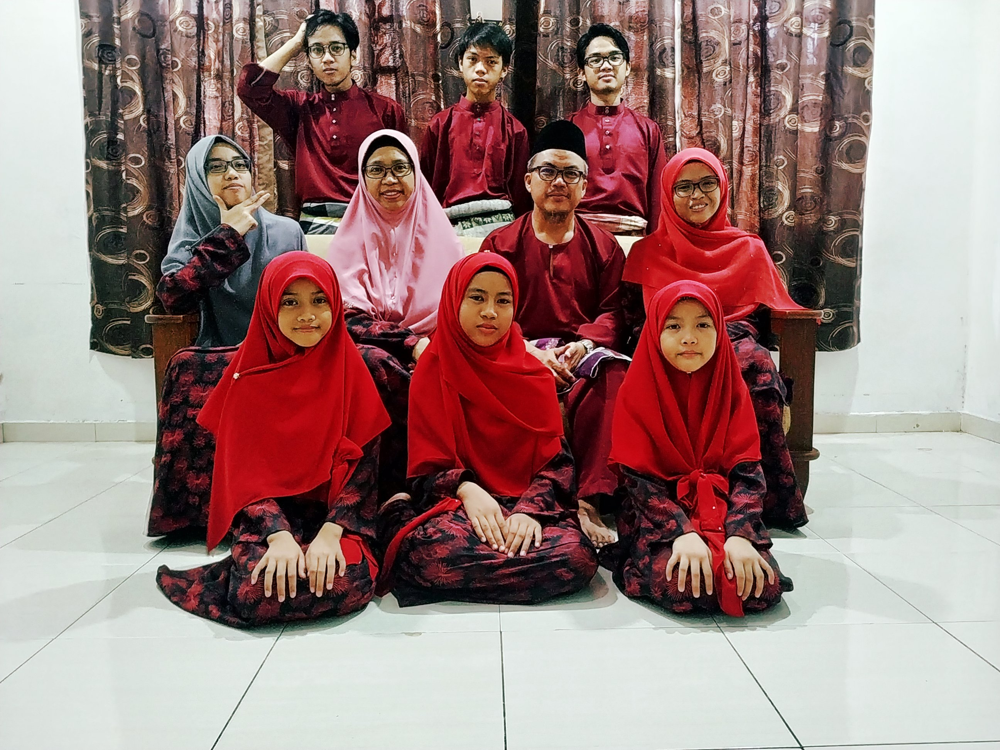
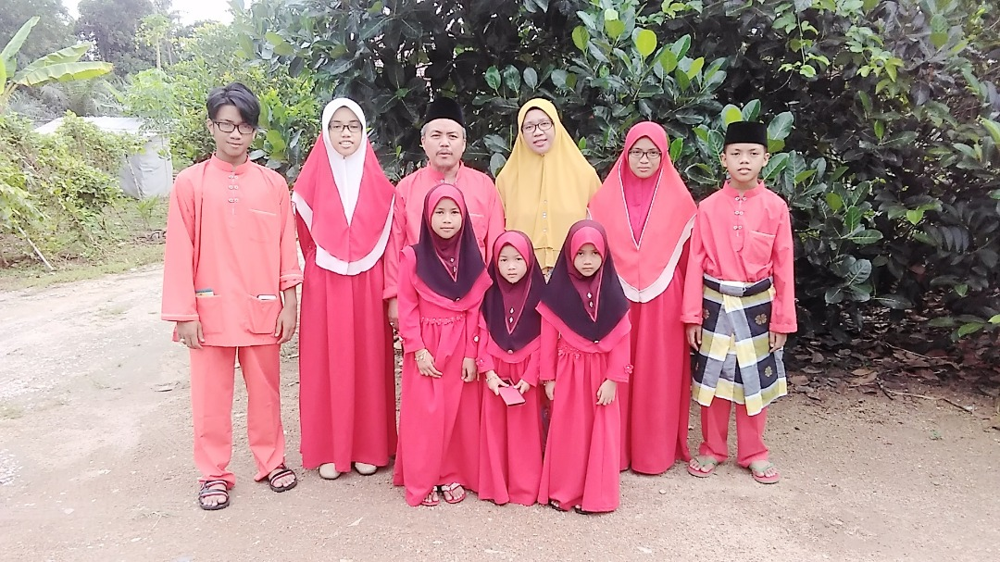
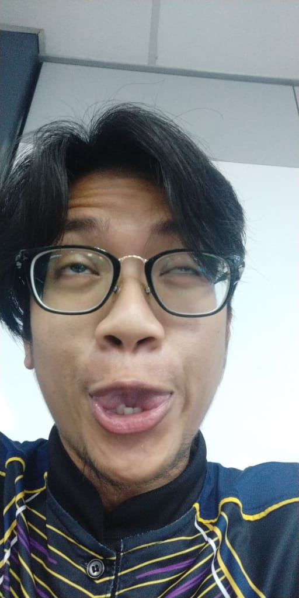
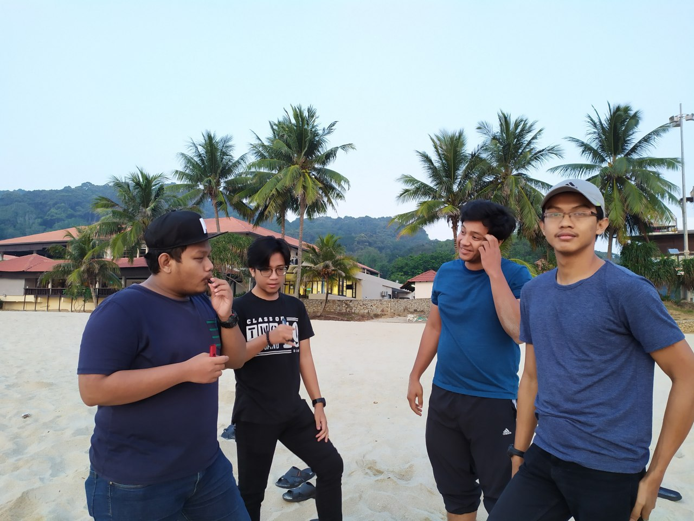

MY PERSONAL BIOGRAPHY
MUHAMMAD MIRZA BIN MUSTAFA KAMAL

THIS IS MY STORY
Hello visitors. The name is Muhammad Mirza Bin Mustafa Kamal and still living his life for 2 decades and 2 years. A sophomore in Universiti Teknologi Mara,Kota Bharu Kelantan in Bachelor of Business Administration( Hons) Islamic Banking and now in second year.
This is his family. He is the second brother among his siblings. His father name is Mustafa Kamal Bin Mat Nayan and his okaasan is Arlina Binti Ahmad Razali. He has eight siblings consists of five sisters and two brothers. The first child is Muhammad(24) ,
followed by him(22) and the first girl's child is Liyana(20) and the second girl's child, Musfirah(19). They are the Big 4, which is consider as the eldest and all of them are university students. Then we get the Loner, Muaz(16), currently in high school.
He is a loner cause he the only one who are in high school EHEX. Then we got the 3 Divas, Syasya(12), Ainul(10), and Auni(8), which is always so dramatic in their house.

THE CHARMS
RESPONSIBLE BROTHERA brother that always put my family first and always spent moments together with his family.He has strong believes that every successful story are from family and their love's one support. The prayer, the good advice, especially
from mom and dad is the best key and one of a factor to success. They are his biggest fan and supportor. Eventhough, sometimes he feel down over something, he will reflect back all of his journey and consult over his family and they never give up on supporting him
and give him strength during his up and downs. Always thinking what best for his family and decide to live up onto his family expectations and trying his best to help his family in the future.:)
 
CREATIVE PERSONHe love to write novel and writing a song's lyric especially during a free time.In addition, he also helping his brother with artwork piece and they came up with a very creative art design. Luckily, his brother was into paint and drawing as well,
so they share the same interest*wink*. With this in mind, he always got many request of help from his classmates and can give them the best solution with outside of the box kind of solutions.
GOOD LISTENER AND CHEERFUL He's a person who will listen to your problems and will always be there for you. He also make a as a good teammate as he always open for any of other's opinion and execute it with the most proficient and without any unnecessary complaint
except giving comment for improving the subject. He strive for his groups achievement in completing the task and also a hardwork person who are devoted to the task given
THERE IS NO SAD COINCIDENCES. THERE ARE ONLY HAPPY ACCIDENT.
 
THANK YOU FOR VISITING MY PAGE .
MY FACEBOOK LINK
MY INSTAGRAM LINK